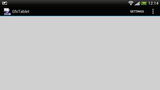

GfxTablet
Dieser Artikel wurde für die folgenden Ubuntu-Versionen getestet:
Ubuntu 16.04 Xenial Xerus
Zum Verständnis dieses Artikels sind folgende Seiten hilfreich:
GfxTablet  ist eine Anwendung für Android, die es ermöglicht, ein Android-Gerät (4.0 und höher) über das Netzwerk als Grafiktablett für den Linux-Desktop zu verwenden. Laut Entwickler unterstützt das Programm 10.000 Druckempfindlichkeitsstufen und kann mit Grafikprogrammen wie GIMP oder MyPaint verwendet werden. Die Einrichtung des Programms ist etwas kniffelig und wird in Folgendem beschrieben.
ist eine Anwendung für Android, die es ermöglicht, ein Android-Gerät (4.0 und höher) über das Netzwerk als Grafiktablett für den Linux-Desktop zu verwenden. Laut Entwickler unterstützt das Programm 10.000 Druckempfindlichkeitsstufen und kann mit Grafikprogrammen wie GIMP oder MyPaint verwendet werden. Die Einrichtung des Programms ist etwas kniffelig und wird in Folgendem beschrieben.
Vorbereitung¶
IP-Adresse ermitteln¶
Um das Programm nutzen zu können, wird die IP-Adresse des Computers im Netzwerk benötigt. Diese kann herausgefunden werden, indem man den Befehl [1]:
ip addr
ausführt. Da der Befehl ip alle vorhandenen Netzwerkschnittstellen auflistet, sucht man nach der Zeichenkette ip addr. Direkt davor steht die aktive Schnittstelle und etwas tiefer die IP-Adresse in der Form inet xxx.xxx.xxx.xxx.
Des Weiteren muss der Quelltext des Programms bei Github heruntergeladen werden.
Android-Gerät¶
Die Applikation für das Android-Gerät kann beim Projekt F-Droid heruntergeladen und installiert werden. Man kann sich auch selbst eine Installationsdatei für Android erstellen.
Übersetzen von networktablet¶
Das Programm für den Computer muss aus dem Quelltext übersetzt werden [2]. Alles hierfür Nötige sollte sich am einfachsten über die Installation des Pakets [3]
build-essential
 mit apturl
mit apturl
Paketliste zum Kopieren:
sudo apt-get install build-essential
sudo aptitude install build-essential
zur eigenen Installation hinzufügen lassen. Hat man sich das Archiv mit dem Quelltext heruntergeladen, wechselt man auf der Konsole in den Zielordner und entpackt dieses [4]. Nun wird in das dadurch entstandene Verzeichnis und darin in das Verzeichnis driver-uinput gewechselt. Hier übersetzt man nun networktablet durch den Aufruf von
make
Kernelmodul laden¶
Da das Programm das Kernelmodul uinput benötigt, das neuere Kernel i.d.R. von Haus aus mitbringen, muss dieses zunächst geladen werden. Hierzu wird der Befehl
sudo modprobe -v uinput
verwendet.

Testlauf¶
Wurde das Kernelmodul uinput geladen, networktablet übersetzt und Gfxtablet auf dem Android-Gerät installiert, kann ein Testlauf durchgeführt werden. Befinden sich beide Geräte im selben Netzwerk, muss die Applikation auf dem Android-Gerät gestartet und die IP-Adresse des Computers in der Applikation eingetragen werden ("Gfxtablet -> Settings -> Networking -> Network host"). Danach wird auf dem Computer die Datei networktablet ausgeführt:
sudo ./networktablet
Hat alles geklappt, sollte sich nun durch Berührung des Touchscreens des Android-Geräts der Cursor auf dem Computer-Monitor bewegen.
Konfiguration¶
Damit das Kernelmodul bei einem Neustart automatisch geladen wird, wird dieses in die Datei /etc/modules eingetragen. Danach sorgt man dafür, dass networktablet auch ohne Root-Rechte [5] aufgerufen werden kann. Dies erreicht man, indem eine neue Gruppe [6], in diesem Beispiel gfxtablet, angelegt wird:
sudo addgroup gfxtablet
In diese werden die Benutzer eingetragen, die Networktablet ohne sudo benutzen können sollen:
sudo usermod -aG gfxtablet BENUTZERNAME
Danach wird in einem Editor [7] eine udev-Regel erstellt, Inhalt:
KERNEL=="uinput", GROUP="gfxtablet", MODE="0666"
und mit Root-Rechten im Ordner /etc/udev/rules.d/ gespeichert. Wichtig ist, dass der Dateiname mit einer hohen Zahl beginnt und auf .rules endet, z.B. 75-tablet.rules. Nun sollte der Rechner neu gestartet werden, um zu sehen, ob alles wie gewünscht funktioniert.
Benutzung¶
Das Programm muss separat gestartet werden, um die Eingebe in Anwendungen zu ermöglichen. Um eine systemweite Verwendung zu erreichen, kann die Datei networktablet z.B. in den Ordner /usr/local/bin verschoben oder verlinkt werden (Rootrechte nötig![5]). Um das Programm immer im Hintergrund parat zu haben, empfiehlt es sich, einen Eintrag im Autostart anzulegen.
Leider ist die Navigation im Anwendungsbildschirm auf dem Tablett nicht ganz einfach; hilfreich kann es sein, sich einen Screenshot für das zu steuernde Programm anzulegen und diese "Doublette" als Hintergrundbild ("template image") im GfxTablet-Fenster auf dem Tablett zu legen. Das ist z.B. für das Training von CellWriter nützlich.
Links¶
Das Android-Tablet als Grafik-Tablet für GIMP benutzen: GfxTablet
 - Blogbeitrag, 04/2013
- Blogbeitrag, 04/2013Grafiktabletts
 Übersichtsartikel
Übersichtsartikel
- Erstellt mit Inyoka
-
 2004 – 2017 ubuntuusers.de • Einige Rechte vorbehalten
2004 – 2017 ubuntuusers.de • Einige Rechte vorbehalten
Lizenz • Kontakt • Datenschutz • Impressum • Serverstatus -
Serverhousing gespendet von